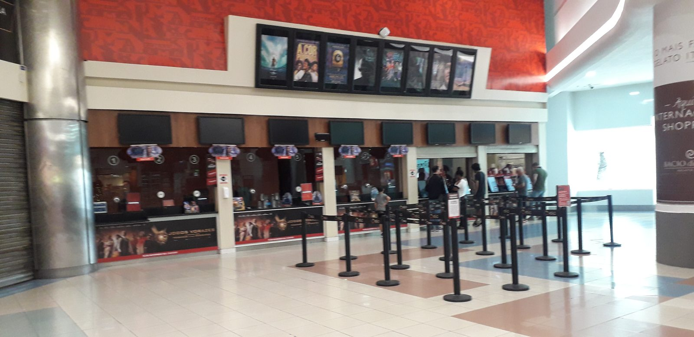

Cinemark passa de US$ 1 bilhão em um trimestre pela primeira vez, e a América Latina põe mais de um terço dos espectadores

A Cinemark passou de US$ 1 bilhão de receita em um único trimestre pela primeira vez. Entre abril e junho de 2026, a maior rede de cinemas do Brasil faturou US$ 1,086 bilhão no mundo, alta de 15,5% sobre o mesmo período do ano passado. O lucro líquido do trimestre foi de US$ 140,8 milhões, contra US$ 94,7 milhões um ano antes. Os números saíram na quinta-feira, 30 de julho, no balanço trimestral que a companhia entrega à SEC, a comissão de valores mobiliários dos Estados Unidos.
Foram 63,7 milhões de espectadores no período. Desses, 23,6 milhões compraram ingresso no segmento internacional da companhia, que reúne Brasil, Argentina, Chile, Colômbia, Peru, Bolívia, Paraguai e seis países da América Central. Mais de um terço de quem entrou numa sala da rede no planeta entrou por aqui, na América Latina.
Na hora de contar o dinheiro, a divisão muda.
Um público que vale menos por cabeça
Nos Estados Unidos, o ingresso médio da Cinemark custou US$ 10,83 no trimestre, 4,2% mais que um ano antes. No segmento internacional, o mesmo ingresso saiu por US$ 4,47. Na bomboniere a distância se repete: cada espectador americano deixou US$ 8,70 no balcão, e cada espectador de fora, US$ 3,58.
A conta fecha assim. Os 40,1 milhões de espectadores americanos renderam US$ 860 milhões à companhia. Os 23,6 milhões latino-americanos renderam US$ 226,4 milhões. Mais de um terço do público, pouco mais de um quinto do dinheiro.
Poder de compra explica boa parte da diferença. O ingresso médio no Brasil inteiro, somando todas as redes, foi de R$ 20,20 em 2025, segundo o levantamento anual do Filme B, o equivalente a US$ 3,67 pela cotação de 31 de dezembro daquele ano. Há ainda um segundo fator, que a própria Cinemark registra no balanço: o resultado internacional do trimestre foi favorecido pela variação cambial. Traduzindo, uma fatia do avanço em dólar é efeito de taxa de câmbio.
O Brasil é o único país que ela separa na conta
Na demonstração por área geográfica, a Cinemark abre uma linha só para o Brasil e empilha os outros doze países num bloco único. Em 2025, o país rendeu US$ 212,1 milhões à companhia, 6,8% da receita consolidada. Em 2024 tinham sido US$ 243,8 milhões; em 2023, US$ 233,4 milhões. A linha brasileira aparece hoje menor do que nos dois anos anteriores.
O destaque tem explicação de tamanho. Em 31 de dezembro de 2025, a rede tinha 84 complexos e 615 salas no Brasil, contra 23 complexos na Argentina e 31 na Colômbia. O relatório anual afirma que a empresa é a maior exibidora do país, e o Filme B, que acompanha o mercado brasileiro há décadas, aponta a Cinemark como a exibidora líder de 2025.
Para dimensionar: o Brasil terminou aquele ano com 871 cinemas e 3.596 salas, ainda pelo Filme B. As 615 salas da Cinemark são cerca de uma em cada seis do país inteiro.
Há no mesmo levantamento um número que não entra em comunicado de resultados: dos 5.571 municípios brasileiros contados pelo IBGE em 2025, apenas 472 tinham sala de cinema naquele ano, 8,47% do total. É uma sala para cada 59.350 habitantes. O trimestre recorde de uma rede americana convive com um país em que nove entre dez cidades não têm onde exibir um filme.
O que encheu as salas
A safra ajudou. Passaram pelo trimestre Super Mario Galaxy, Michael, Toy Story 5 e O Diabo Veste Prada 2, mais dois filmes de terror independentes que renderam muito acima do esperado, Obsessão e Backrooms. Somada, a bilheteria da América do Norte no período chegou a US$ 2,97 bilhões, o maior patamar desde a pandemia, segundo o TheWrap.
"Os fãs de cinema apareceram em peso para uma programação excepcional de filmes", afirmou Sean Gamble, presidente e CEO da Cinemark, no comunicado de resultados da companhia.
Na teleconferência com analistas, em fala reproduzida pelo TheWrap, Gamble apontou de onde veio o reforço.
"Continuamos vendo um crescimento bem saudável do público mais jovem", disse o executivo, segundo o TheWrap.
Parte dessa plateia chega por assinatura. O Movie Club, o programa da rede nos Estados Unidos, passou de 1,5 milhão de membros e respondeu por cerca de 30% da bilheteria americana da empresa no trimestre. No mundo todo, quase 30 milhões de pessoas estão inscritas nos programas de fidelidade da companhia. Em 30 de junho, o circuito somava 495 complexos e 5.620 salas.
E aqui embaixo?
O movimento brasileiro é parecido, em outra escala. Até maio, a bilheteria do país passou de R$ 1 bilhão, o melhor resultado desde a pandemia, segundo dados da Ancine compilados pela CNN Brasil. No mesmo período de 2025 tinham sido R$ 944 milhões. Em 2019, antes de tudo, R$ 1,2 bilhão. Sobe, e ainda não alcançou o patamar de sete anos atrás.
O segundo semestre começou forte. A Odisseia, de Christopher Nolan, liderou a bilheteria brasileira no fim de julho, e num único fim de semana os cinemas do país venderam 2,14 milhões de ingressos, sem nenhum filme brasileiro no Top 10. Em 31 de julho, Homem-Aranha: Um Novo Dia fez o maior primeiro dia de bilheteria já registrado nos Estados Unidos e no Canadá.
A rede já contratou o passo seguinte. Em 30 de junho, tinha compromissos assinados de construção e ampliação para sete complexos e 57 salas, dos quais quatro complexos e 33 salas fora dos Estados Unidos, com investimento restante estimado em US$ 19,9 milhões na operação internacional.
Esse é o plano da rede para o próprio caixa. A outra metade do problema segue de pé: o dinheiro público que banca o filme nacional, do Fundo Setorial do Audiovisual aos editais estaduais, precisa de sala para chegar ao espectador, e o mapa das salas mudou pouco. Vale acompanhar quantas das 33 salas internacionais prometidas param no Brasil, e em que cidade.